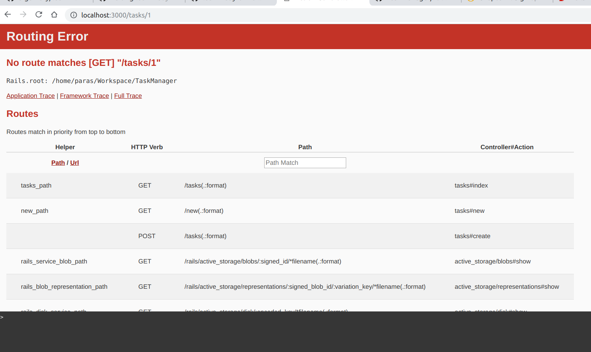
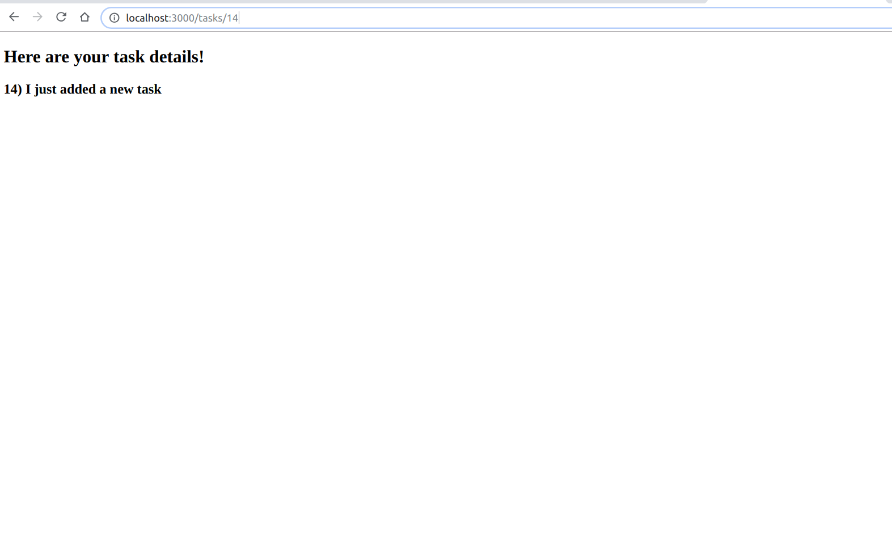

Chapter 5 - Show a task
In the last chapter, we saw how to create a new task and save it to the database. Now let's look at a way to display the newly created task.
5.1 - Implement show action in TasksController
Open /app/controllers/tasks_controller.rb and add the following lines of code.
.
.
def show
@task = Task.find(params[:id])
end
.
5.2 - Add view file for show action
Use the touch command as discussed previously to create a new view file show.html.erb.
$ touch app/views/tasks/show.html.erb
In the view let's make use of @task to display id and description.
<div>
<h2>
You just created a new task!
</h2>
<h3>
<%= @task.id %>)
<%= @task.description %>
</h3>
</div>
Now, let's go to the URL http://0.0.0.0:3000/tasks/1 to see the task having id = 1.

If you remember, we saw a similar error in a previous chapter.
The rails router can't find any route matching the format /tasks/:id.
Hence, let's solve this by adding a route in the /config/routes.rb file to point to a specific controller (tasks) and its specific action (show).
get '/tasks/:id', to: 'tasks#show', as: 'task'
At the end, we use the as: 'task' to generate our named url.
For example, task_url(10) would match the /tasks/10 route and would redirect to the show page of the task have id = 10.
Let's linkify the tasks on index page to the show page of each task.
Open the file app/views/tasks/index.html.erb
<h1>Tasks List</h1>
<% @tasks.each do |task| %>
#------ modified code below------
<%= link_to "#{task.description}", task_path(task) %>
#------ end of modified code-----
<% end %>
</div>
We have used the link_to method and passed the task's show page path for each task.
Now, by clicking on any task's description, it would lead to it's show page.
5.3 - Redirect to show page after task creation
Now, we'll see how to get to the show page as soon as we click the Create Task button.
We use the redirect_to method and mention along with it the path that needs to be followed once the button is clicked. Let's edit the create action in the tasks controller.
def create
@task = Task.new(task_params)
@task.save
# Redirect to the show page
redirect_to task_url(@task)
end
Let's click on the Create Task button once again and see where it leads us.

Now, we are redirected to the show page of the task and the corresponding task's id and description attributes are visible.
5.4 - Application flow
So let's go through the flow of our applicaiton till now.
- When we click the
Add new todolink, the router directs the control to thenewaction. - The corresponding view
new.html.erbis called which returns the form to enter task details. - After clicking the
Create Taskbutton, aparamshash is passed along, which contains all the details as filled in the form by the user. - The router directs the control to the
createaction. - The create action creates a new task object and fills it with the values in the params hash and saves it in the database.
- Then using the
redirect_tomethod as shown above, the router directs the control to the show action. - The show action finds the task object by matching the
idattribute and retrieves the corresponding task object from the databse and saves it in the@taskinstance variable. - The control transfers to the view
show.html.erb, which displays the retrieved task'sidanddescription.
5.5 - Use rails console to search tasks
Let's fire up the console once again using the rails console command.
$ rails console
Running via Spring preloader in process 25412
Loading development environment (Rails 5.2.2)
irb(main):001:0> Task.find(1)
Task Load (0.2ms) SELECT "tasks".* FROM "tasks" WHERE "tasks"."id" = ? LIMIT ? [["id", 1], ["LIMIT", 1]]
=> #<Task id: 1, description: "My first task", created_at: "2019-02-04 13:34:04", updated_at: "2019-02-04 13:34:04">
irb(main):002:0> Task.find(5)
Task Load (0.4ms) SELECT "tasks".* FROM "tasks" WHERE "tasks"."id" = ? LIMIT ? [["id", 5], ["LIMIT", 1]]
=> #<Task id: 5, description: "My 4th task", created_at: "2019-02-04 15:14:26", updated_at: "2019-02-04 15:14:26">
irb(main):003:0> Task.find(7)
Task Load (0.4ms) SELECT "tasks".* FROM "tasks" WHERE "tasks"."id" = ? LIMIT ? [["id", 7], ["LIMIT", 1]]
Traceback (most recent call last):
1: from (irb):3
ActiveRecord::RecordNotFound (Couldn't find Task with 'id'=7)
As shown above, we use the find method and pass it with any id. If an entry in the database exists with corresponding id, then the record is fetched. Else, an error is raised stating that no task was found with the given id.
We can also use other attributes to look for a specific task using the where method. Let's try with the description attribute.
irb(main):004:0> Task.where(description: "My first task")
Task Load (0.8ms) SELECT "tasks".* FROM "tasks" WHERE "tasks"."description" = ? LIMIT ? [["description", "My first task"], ["LIMIT", 11]]
=> #<ActiveRecord::Relation [#<Task id: 1, description: "My first task", created_at: "2019-02-04 13:34:04", updated_at: "2019-02-04 13:34:04">]>
irb(main):005:0> Task.where(description: "My 4th task")
Task Load (0.4ms) SELECT "tasks".* FROM "tasks" WHERE "tasks"."description" = ? LIMIT ? [["description", "My 4th task"], ["LIMIT", 11]]
=> #<ActiveRecord::Relation [#<Task id: 4, description: "My 4th task", created_at: "2019-02-04 15:11:42", updated_at: "2019-02-04 15:11:42">, #<Task id: 5, description: "My 4th task", created_at: "2019-02-04 15:14:26", updated_at: "2019-02-04 15:14:26">]>